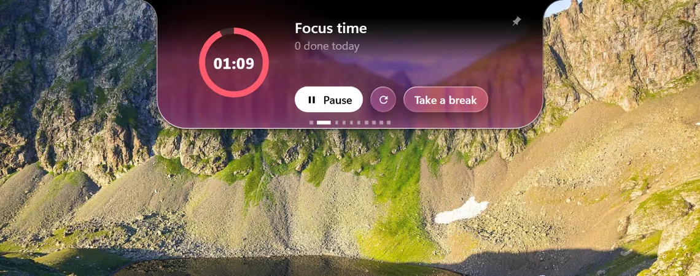
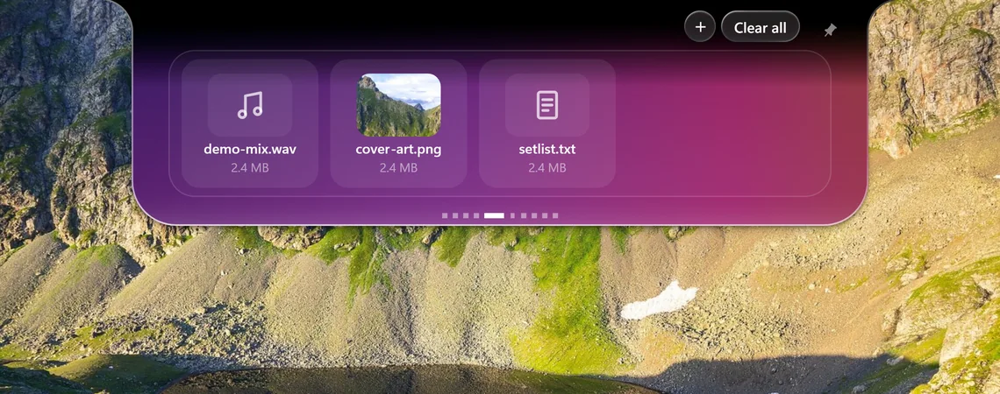
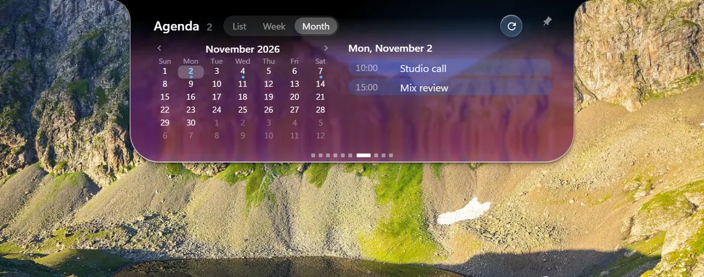
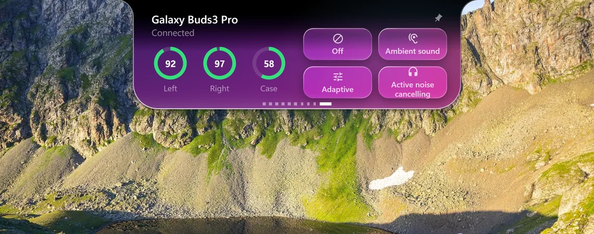
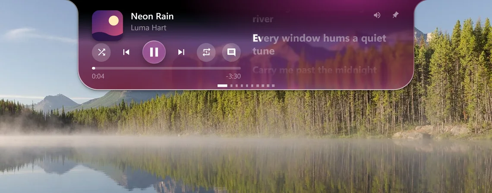
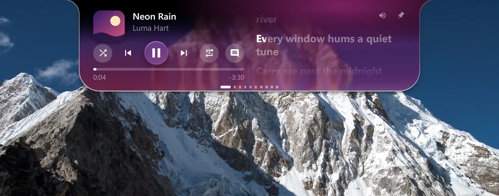
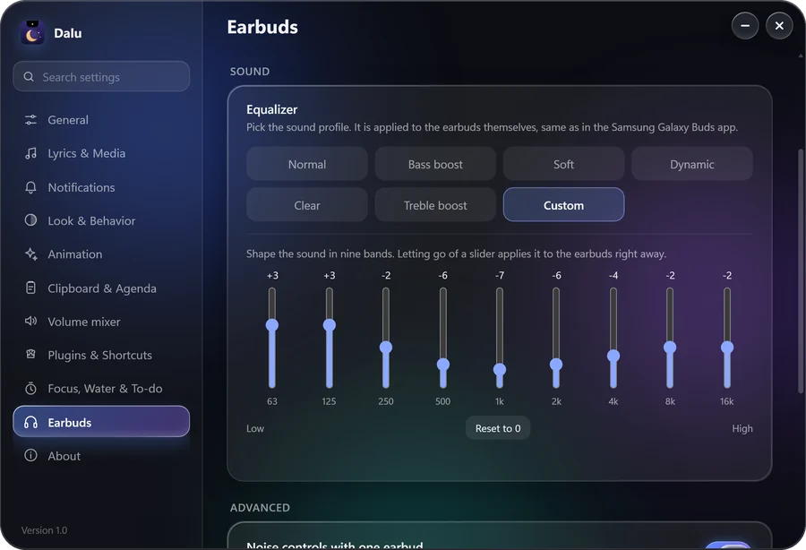
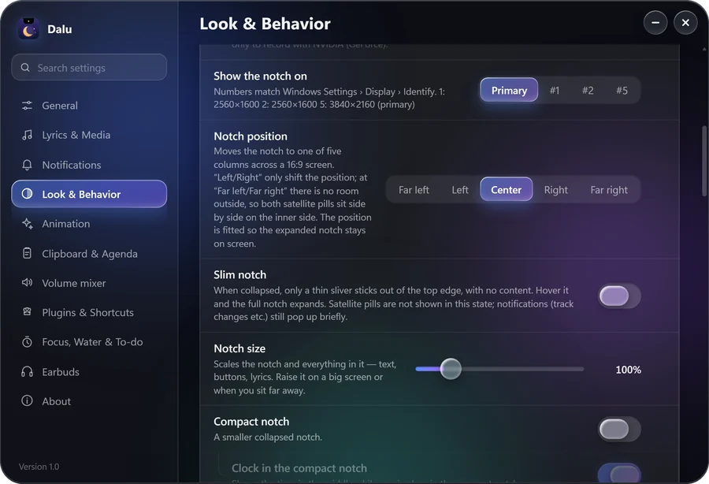

The top of your screen, finally alive.
A Windows notch for music, lyrics and timers, one hover away.

Lyrics that follow the voice.
Streetlights bloom along the river.
Every window hums a quiet tune.
Carry me past the midnight bridges.
Word by word, whenever the song carries timing data.

Every word on time.
When a song has timing data, each word lights up as it is sung.

Stay on one thing.
Pomodoro, timer, stopwatch laps, water and to-do, all inside the notch.

Drop it. Carry it.
Park a file on the notch, then drag it into any window.

Today at a glance.
Paste a calendar link (.ics). Read it by list, week or month.

Calm, in one tap.
Switch the noise control on your Galaxy Buds without opening a thing.
Plain black. Or liquid glass.
Scroll to slide between the two.

Glass that bends the world behind it.
Choose any wallpaper. The notch refracts what is behind it.




Hover the dots. Pick a tab.
Point at the small dots and they turn into tab icons. Here is what each one does.
Tab icons
- MusicTrack, playback, lyrics
- FocusPomodoro
- TimerTimer, stopwatch and laps
- WaterReminders to drink
- ShelfPark a file for a moment
- To-doReminders at a set time
- AgendaList, week, month
- ShortcutsYour apps and folders
- PluginsControl other apps
- EarbudsBattery and noise control
In the corner
- VolumeLevel and mute
- PinKeep the notch open
Put it where you want.
Split the top of the screen into five columns and slide the notch along. At the far ends the satellite pills gather on the inner side.
Collapsed, only a thin sliver shows. Hover it and the notch opens.
The notch hides while a DirectX, OpenGL or Vulkan game is in front.
Nine bands. Your sound.
Tune the equalizer and hear it as you drag, or keep noise control on with one earbud in.
Tested on Buds3 Pro only.

Make it yours.
Over a hundred settings, four languages, and plugins written in plain JSON.

Get Dalu. It's free.
Windows 10 (2004 or later) or 11. No account, no tracking.
- Install
- No administrator rights needed.
- Verify
- SHA-256 checksums sit on the download page.
- License
- Source-available, noncommercial use (PolyForm Noncommercial 1.0.0).
Not code-signed, so Windows SmartScreen may call it an unknown app the first time. Choose 'More info', then 'Run anyway'.